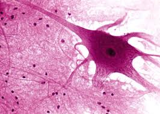
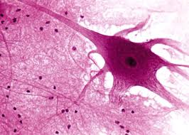

Ovo je stranica nase aplikacije Histologija...

Ovo je stranica nase aplikacije Histologija...

Histologija je biološka disciplina koja proučava tkiva.
Savremena histološka metodologija se zasniva na korišćenju mikroskopa.
Neformalni naziv histologije je i mikroskopska anatomija.
'Histopatologija' proučava obolela tkiva, i veoma je važan deoo discipline koja se zove anatomska patologija,
pomoću koje se može jasno uspostaviti dijagnoza obolelom tkivu.
Histološka analiza počinje sa operacijom, biopsijom ili autopsijom.
Dobijena tkiva se zatim stave na stakla i fiksiraju kako bi se sprečilo izumiranje uzorka.
Jedan od najčešćih načina održavanja uzorka je pomoću formalina (10% rastvor formaldehida u vodi).
Uzorci se zatim speru sa veoma koncentrovanim etanolom, kako bi se uzorak dehidrirao,
i zatim se očisti hemikalijama kao što su hlorofopm ili ksilen. Tokom ovog celog procesa,
koji traje od 12 do 16 časova, uzorak tkiva će biti u takvom fizičkim stanju da je moguće raspoznati simptome
obolelog tkiva. Da bi tkivo sa svim svojim ćelijama i organelama u ćelijama bilo vidljivo,
neophodno je obojiti tkivo određenim agensima koji se nadovežu na organele na osnovu naelektrisanosti.